Comment la réalité virtuelle et la réalité augmentée vont transformer notre mode de consommation ?
Sommaire
Introduction qu'est ce que l'AR et la VRHistoire
Équipements
Modification de notre type de consommation
De nouvelles possibilités pour la publicité
Éthique
Conclusion
Qu’est ce que l’AR et la VR ?
Réalité augmentée / AR

 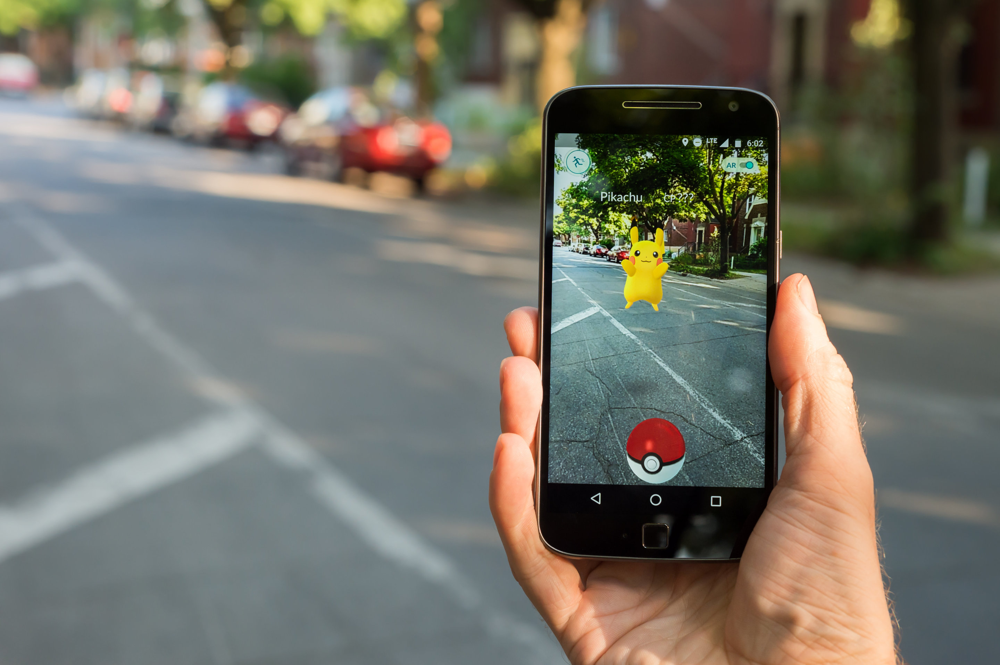
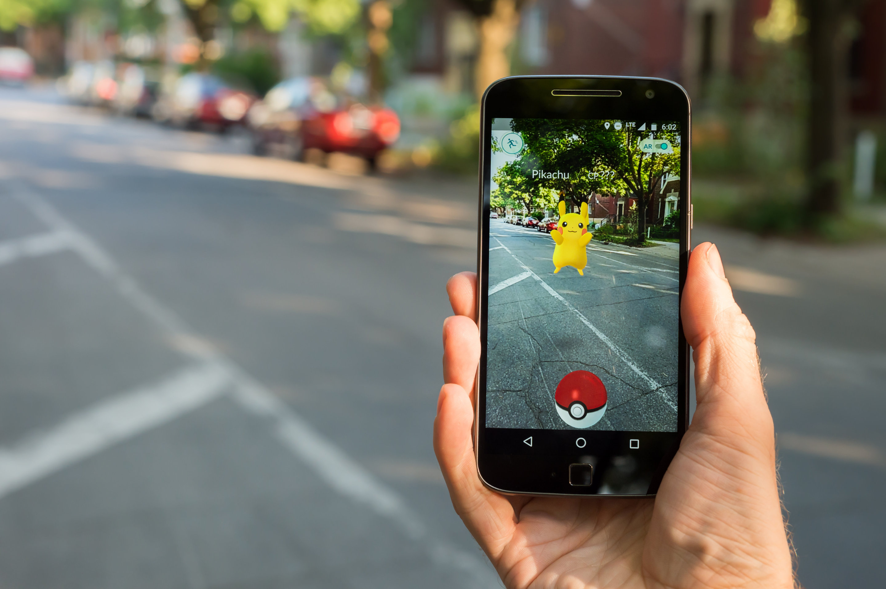

La réalitée augmentée peut se définir comme une interface entre des données virtuelles et le monde réel.
Réalité virtuelle / VR
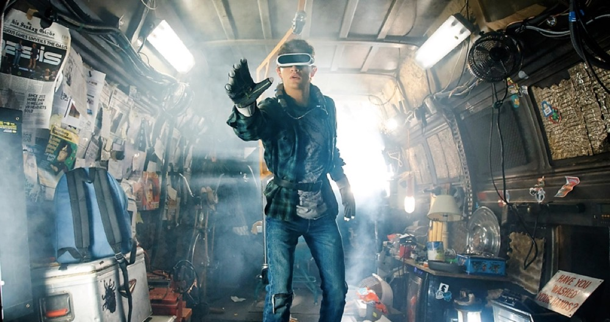La réalité virtuelle est un ensemble de techniques et systèmes qui procurent à l’homme le sentiment de pénétrer dans des univers synthétiques créés sur ordinateur.
Histoire
1968

- Ivan Sutherland
- The Sword of Damocles
- Premier casque de système d'affichage
1992
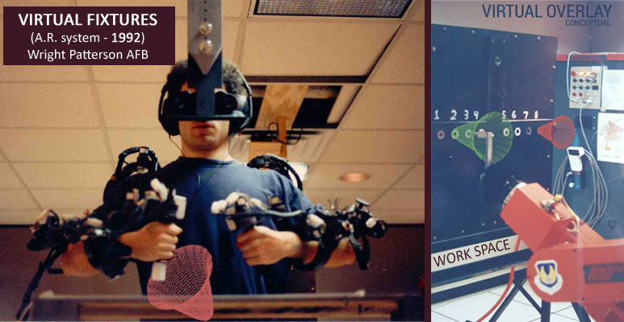
- Louis Rosenberg
- Virtual Fixtures
- Première immersion complète
1999
- Hirokazu Kato
- ArToolKit
- 2009 ArToolKit Web
2012

- Google Glass
- 2014 ouverture au publique
- 1500 $
- 2015 arrêt du programme
2014
- Occulus Rift
- Kickstarter en 2012 (2 millions US $)
- 2014 Facebook rachat 2 milliard US $
2016
- Pokemong GO
- Niantic
- 45 millions d'utilisateurs quotidien
- Hausse de l'action Nitendo de 93% en une semaine
Equipements

 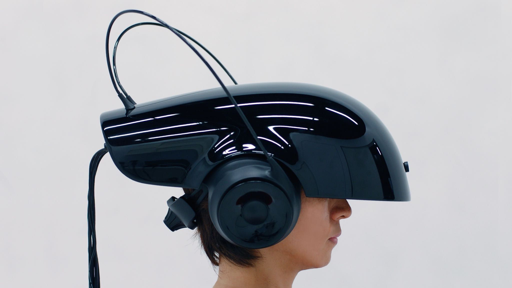
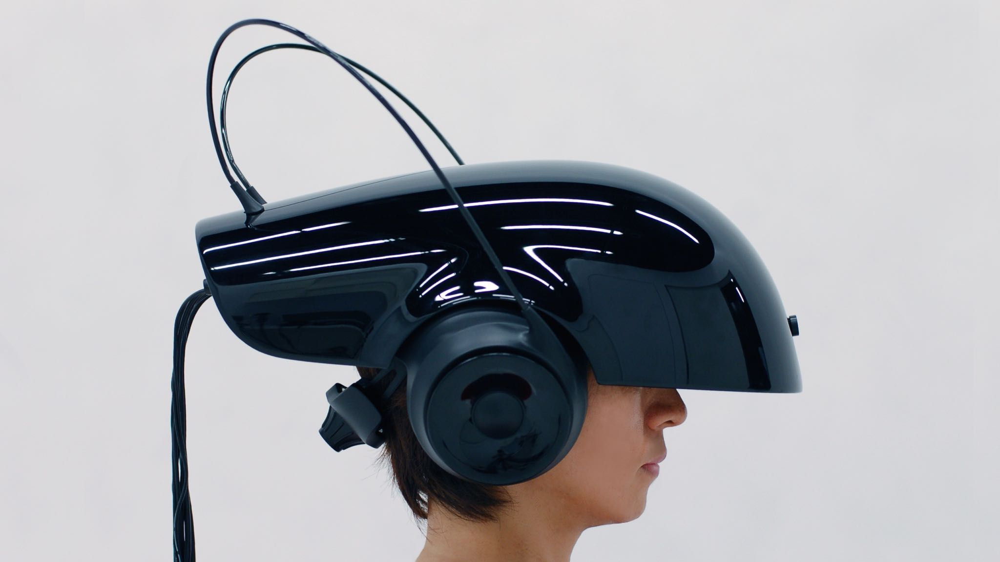
Modification de notre type de consommation
Decentraland
- Cryptomonaie basée sur Ethereum (MANA)
- Création de terrain et d'objet
- Vente, Achat et Services
XXIe siècle / Internet
Nouvelles approches commerciales
- Expérimenter le produit
- Immersion dans l'achat
- Offrir une expérience unique aux utilisateurs.
- Avantage concurrentiel pour les marques
Sondage
Pensez vous que la VR à sa place dans vos recherches de bien immobilier ?
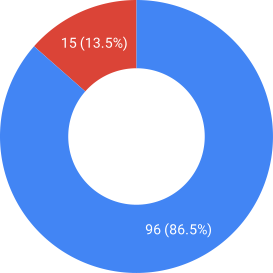Pensez vous que vous pourriez vous contenter de la visiter d'un appartement en VR pour prendre votre décision ?

Lesquels de ces avantages vous semblent intéressant ?
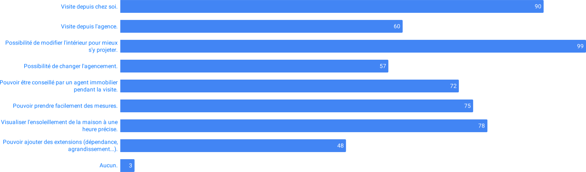Pensez vous que la VR a sa place dans votre travail ?
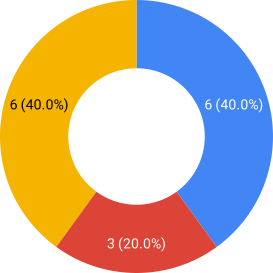Oui mais je ne souhaite pas travailler avec
Non
Oui
Lesquels de ces avantages de la VR vous semble intéressant pour faire visiter un bien immobilier ?
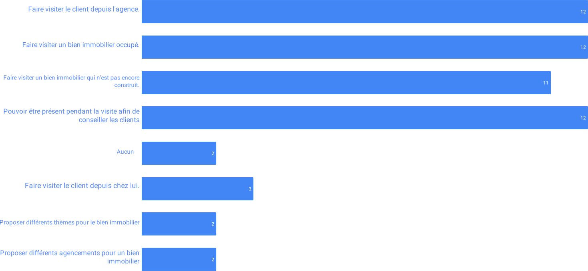De nouvelles possibilités pour la publicité
Hyper-personnalisation
Collecter un maximum de données
Proposer du contenu adapté au consommateur
Personnaliser l'experience client (écoute, conseil, suggestion)
Simuler le vendeur (chatbot)
L'impact de l'hyper-personnalisation
102 milliards d'euros de perte
66% des français plus enclin à acheter
La moitié des consommateurs aimeraient être mieux considérés
1/3 d'entre eux estiment que les technologies prédictives amélioreront leur expérience client
La réalité augmentée dans le e-commerce
- Visualiser les produits en AR
- Augmentation du taux de conversion entre 20% et 80%
- Réduction de 20% du nombre de retour
La réalité virtuelle ludique
- Cours de travaux virtuel
- Inciter le consommateur à l'achat
- Promouvoir certaines marques de produit
Éthique
La collecte des données


- Cambridge Analytica
- Aleksandr Kogan
- Optimisation de l'audience des publicités en ligne
Les dérives de la réalité augmentée
- Publicités intrusives
- Nuisances visuelle
- Harcèlement
Les dérives de la réalité virtuelle
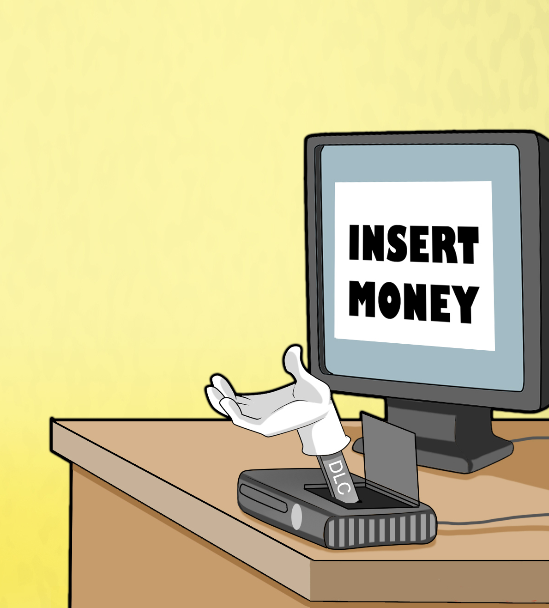
- Addiction
- Problèmes de santé (cinétose, sécheresse occulaire)
- Piratage
- Microtransactions
Conclusion
Rachat d'Occulus par Facebook en 2014
Lancement de Pokemon Go 2016
Public non réticent à l'usage de ces technologies
Mise en place d'une réglementation adéquate
Secteur en pleine expansion